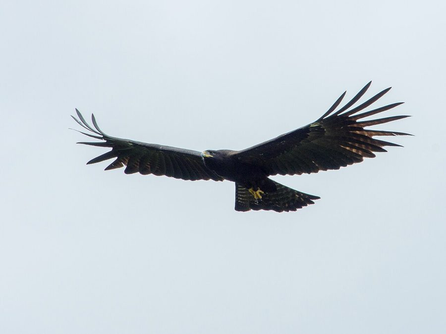

ब्लैक ईगलBlack Eagle
Ictinaetus malayensis · Accipitridae · BRD-0367

- Scientific name वैज्ञानिक नाम
- Ictinaetus malayensis (Temminck, 1822)
- Family कुल
- Accipitridae
- Hindi हिंदी
- ब्लैक ईगल
- Local names स्थानीय नाम
- black eagle, indian black eagle
- Status here यहाँ की स्थिति
- native
- Movement आवागमन
- Winter visitor
- Known from कहाँ दर्ज
- Others have published records from the wider Awadh–Purvanchal plain, none yet from Basti–Ayodhya अवध–पूर्वांचल से दूसरों के प्रकाशित अभिलेख, बस्ती–अयोध्या से अभी नहीं
- IUCN IUCN
- LC
- Review समीक्षा
- not yet reviewed
When to look कब देखें
Winter visitor शीतकालीन प्रवासी. Expected mainly in November, December, January, February, March. मुख्यतः नवंबर, दिसंबर, जनवरी, फ़रवरी, मार्च में अपेक्षित।
Resident in the Himalayas from Chamba to Eastern Assam (Baker 1928). GBIF records in the Uttar Pradesh Terai fall between November and March. All migrants and visitors →
Tell it apart from इनसे अलग पहचानें
ब्लैक ईगल / Black Eagle
Ictinaetus malayensis (Temminck, 1822) — Accipitridae
ब्लैक ईगल — घने सदाबहार जंगलों में रहने वाला एक विशाल, गहरा काला-भूरा शिकारी पक्षी। बेकर (1928) के अनुसार इसका पूरा शरीर गहरा काला-भूरा होता है, आंख के नीचे एक सफेद धब्बा होता है और सेरे तथा पैर चमकीले पीले होते हैं। इसकी उड़ान धीमी और स्थिर होती है, लेकिन यह जंगलों के भीतर अत्यंत तेज गति से उड़ने में सक्षम है। यह घोंसलों से अंडे और चूजे चुराता है तथा तीतर, मेंढक और छिपकलियों का शिकार करता है।
Quick Identification त्वरित पहचान
| Feature | Description |
|---|---|
| Habit | Large forest eagle frequenting heavy evergreen forest and dense canopy |
| Plumage | Entire plumage dark blackish-brown, paler below where pale feather bases show through (Baker 1928, p. 83) |
| Head & Eye | Small white patch under eye; lores dull white with black bristles (Baker 1928, p. 83) |
| Tail Pattern | Blackish tail faintly barred with grey; long and slightly rounded (Baker 1928, p. 83) |
| Wings | Exceptionally broad, paddle-shaped wings held in a pronounced V when soaring |
| Soft Parts | Iris dark brown; cere and gape bright yellow; feet yellow, claws black (Baker 1928, p. 83) |
Field tip: Look for an all-dark forest eagle with broad wings and bright yellow feet gliding through heavy forest canopy (Baker 1928, p. 83).
हिंदी:
पूरा काला-भूरा रंग, चौड़े डैने, चमकीले पीले पैर और घने जंगलों के ऊपर उड़ने का तरीका देखकर इसे पहचाना जाता है (बेकर 1928)।
Morphology आकारिकी
Measurements as given by Baker (1928) for Ictinaetus malayensis perniger:
| Measurement | Range |
|---|---|
| Biometrics | Wing, <5 520 to 553 mm., $ 538 to 568 mm. ; tail 285 to 312 mm. ; tarsus 69 to 73 mm. ; culmen 37 to 38 mm. (Baker 1928) |
Stuart Baker (1928, p. 83) described the adult plumage: "A patch under the eye white ; lores dull white, the bristles black ; tail blackish barred with grey ; remaining plumage dark blackish-brown, generally not so dark below, where the pale bases to the feathers often show through a good deal."
Colours of soft parts: iris dark brown; bill greenish or plumbeous-horny with black tip; cere and gape yellow; legs yellow, claws black (Baker 1928, p. 83).
हिंदी:
बेकर (1928) के अनुसार नर के डैने 520 से 553 मिमी और मादा के 538 से 568 मिमी होते हैं। पूंछ 285 से 312 मिमी, टार्सस 69 से 73 मिमी और चोंच 37 से 38 मिमी होती है। आंख के नीचे एक छोटा सफेद निशान और पैर पीले होते हैं।
Behaviour & Ecology व्यवहार और पारिस्थितिकी
Stuart Baker (1928, p. 84) noted: "This magnificent Eagle is entirely a bird of forests and generally of those which are evergreen. It is true it may be seen on rare occasions hawking on the outskirts of these but for the most part it keeps well to their interior."
Baker (1928, p. 84) observed: "Its flight is generally deliberate and easy but it is capable of immense speed and is wonderfully active through heavy forest. The only call I have heard is a plaintive squeal and, when attacking disturbers of its nest, a series of harsh croaks and discordant cries."
हिंदी:
बेकर (1928) के अनुसार यह पूरी तरह से घने जंगलों का पक्षी है। इसकी उड़ान आमतौर पर धीमी और स्थिर होती है, परंतु यह घने जंगल के भीतर अत्यंत तेज गति से उड़ने में सक्षम है।
Life Cycle / Phenology जीवन चक्र
Baker (1928, p. 84) recorded that the Indian Black Eagle breeds in dense hill forests from the foothills up to 6,000 feet: "Most eggs, however, are laid between November and March... As a rule, only one egg is laid but occasionally two."
In Uttar Pradesh, GBIF records from the Terai (Lakhimpur Kheri, Balrampur, Shravasti) fall between November and March.
हिंदी:
बेकर (1928) के अनुसार यह नवंबर से मार्च के बीच जंगलों में एक या दो अंडे देकर प्रजनन करता है। उत्तर प्रदेश के तराई में इसके शीतकालीन रिकॉर्ड हैं।
Host Plants or Prey आहार
Stuart Baker (1928, p. 84) recorded the prey: "It feeds often on worms, frogs, lizards and large insects and has the reputation of being a confirmed robber of eggs and young birds. It, however, also attacks nobler prey and I have seen it kill pheasants, jungle-fowl and wood-partridges".
हिंदी:
बेकर (1928) के अनुसार यह केंचुए, मेंढक, छिपकलियां, बड़े कीड़े और घोंसलों से अंडे व चूजे खाता है। इसके अलावा यह तीतर, जंगली मुर्गियों और बटेरों का शिकार भी करता है।
Predators / Natural Enemies शत्रु
No source opened for this atlas names a specific predator of this bird.
हिंदी:
इस एटलस के लिए खोले गए किसी भी स्रोत में इस विशाल शिकारी पक्षी के किसी शत्रु का उल्लेख नहीं है।
Agricultural / Human Relevance कृषि प्रासंगिकता
As an inhabitant of dense forested tracts, the Black Eagle does not come into regular conflict with agricultural activities. Protected under the Wildlife (Protection) Act, 1972.
हिंदी:
घने जंगलों में रहने के कारण इसका कृषि से कोई प्रत्यक्ष टकराव नहीं होता। यह वन्यजीव (संरक्षण) अधिनियम, 1972 के तहत संरक्षित है।
Expected Locally स्थानीय रूप से अपेक्षित
Not a field record. Written from published accounts for eastern Uttar Pradesh. No confirmed local sighting yet — if you have seen it, that is what the atlas needs.
अभी तक स्थानीय पुष्टि नहीं। यह विवरण प्रकाशित स्रोतों से है, किसी अवलोकन से नहीं।
GBIF holds published records from the wider Awadh–Purvanchal plain, none yet from Basti–Ayodhya.
Published records are known from the northern forest tracts of Lakhimpur Kheri (four records), Balrampur (two records), Shravasti (one record), and an exceptional record from Lucknow (one record), reported by six observers between 2016 and 2025 during the winter months of November to March. Two of the eight regional occurrences are photographic records on iNaturalist.
A first record would be a photograph with place and date, sent through the About page.
Distribution वितरण
Global range: Baker (1928, p. 83) gave the distribution: "Himalayas from Chamba to Eastern Assam, Bengal and Chota Nagpur (Ball). The West coast of India from Kanara to Cape Comorin; Ceylon. Jerdon also says he saw this quite unmistakable bird in the Eastern Ghats and at Bastar in Central India. It is a rare straggler in parts of Burma and has occurred in Perak and Malacca in the Malay Peninsula."
In India: Baker (1928, p. 83) recorded it in the Himalayas from Chamba to Eastern Assam, Bengal, Chota Nagpur, and the West coast of India from Kanara to Cape Comorin.
In Uttar Pradesh: Records are restricted to the protected forest tracts of the Terai in Lakhimpur Kheri, Balrampur, and Shravasti, with a single winter record from Lucknow. GBIF holds no published record from Basti or Ayodhya.
In Basti district / eastern UP: GBIF holds no record from Basti or Ayodhya; the nearest are in Lakhimpur Kheri, Balrampur, and Shravasti.
हिंदी:
बेकर (1928) के अनुसार यह चंबा से असम तक के हिमालय, बंगाल और पश्चिमी तट पर पाया जाता है। उत्तर प्रदेश में इसके रिकॉर्ड लखीमपुर खीरी, बलरामपुर, श्रावस्ती और लखनऊ से हैं।
Research Questions शोध प्रश्न
- What causes winter wandering of Black Eagles from the sub-Himalayan ridges of Nepal into the Dudhwa and Suhelwa sal forests? / नेपाल की तलहटी से सर्दियों में इस बाज़ के दुधवा और सुहेलवा के जंगलों में आने के क्या कारण हैं?
- Does the Black Eagle forage on nesting birds in the upper sal canopy in the northern Terai reserves? / क्या यह तराई के साल वनों में ऊंचे पेड़ों पर घोंसलों से अंडे और बच्चे तलाशता है?
- How do breeding birds in mixed canopy respond with mobbing calls when a soaring Black Eagle patrols overhead?
- What proportion of winter diet in lowland forests comprises forest bird nestlings versus reptilian prey?
- Can local forest rangers distinguish the paddle-shaped wing silhouette of the Black Eagle from the Crested Serpent Eagle? (An observer can look for uniform dark underparts and lack of white tail bands.)
Similar Species मिलती-जुलती प्रजातियाँ
| Species | How to tell apart | हिंदी | |
|---|---|---|---|
| [[crested_serpent_eagle | Crested Serpent Eagle]] (Spilornis cheela) | Prominent bushy nuchal crest, unfeathered yellow legs, broad white band across flight feathers and tail, finely white-spotted underparts (Baker 1928, p. 96) | सर्प चील |
| [[changeable_hawk_eagle | Changeable Hawk-Eagle]] (Nisaetus cirrhatus) | Slender erect crest (in northern birds), feathered tarsus to toes, white or pale underparts heavily streaked with dark brown (Baker 1928, p. 85) | शाह बाज़ / चेंजेबल हॉक-ईगल |
| [[black_kite | Black Kite]] (Milvus migrans) | Shallow-forked tail, unfeathered tarsus, narrower wings without paddle-shaped primaries, scavenger habits (Baker 1928) | चील / काली चील |
Field rule: The almost uniform dark blackish-brown plumage, bright yellow cere and feet, long paddle-shaped broad wings with slotted primaries, and long tail distinguish the Black Eagle in soaring flight (Baker 1928, p. 83).
हिंदी:
सर्प चील के पंखों और पूंछ पर चौड़ी सफेद पट्टी होती है; शाह बाज़ के नीचे का हिस्सा धारीदार होता है; ब्लैक ईगल पूरा काला-भूरा होता है और इसके पंख बहुत चौड़े होते हैं।
Taxonomy & Classification वर्गीकरण
Original description. Described by Coenraad Jacob Temminck in 1822 in Nouveau recueil de planches coloriées d'oiseaux (livr. 20, pl. 117), under the basionym Falco malayensis, with the type locality given as Java.
Subspecies. Stuart Baker (1928, p. 83) treated the Indian population under the subspecies Ictinaetus malayensis perniger (Hodgson, 1836), described from Nepal. GBIF uses the same spelling, Ictinaetus malayensis; the IUCN Red List spells it malaiensis.
Family and order placement. Order Accipitriformes, family Accipitridae (eagles, hawks, and allies), genus Ictinaetus.
IUCN status rationale. Evaluated as Least Concern (LC) on the IUCN Red List (BirdLife International 2016).
हिंदी:
तेमिंक ने 1822 में जावा से इसका वर्णन किया था। हॉजसन ने 1836 में नेपाल से भारतीय उपप्रजाति का नाम दिया था। यह संकट-मुक्त (LC) श्रेणी में है।
Photo Gallery फोटो गैलरी
No photos yet — add field photos to media/species/black_eagle/ and run node scripts/sync_photos.js.
Photos needed आवश्यक फोटो
- [ ] Adult soaring overhead showing broad paddle-like wings and yellow cere (सिर के ऊपर मंडराता पक्षी जिसमें चौड़े डैने और पीली सेरे दिखे)
- [ ] Bird perched in canopy showing uniform blackish plumage and long tail (पेड़ पर बैठा पक्षी जिसमें गहरा काला रंग दिखे)
References संदर्भ
- Temminck, C. J. (1822). Nouveau recueil de planches coloriées d'oiseaux. Livr. 20, pl. 117 (as Falco malayensis).
- Baker, E. C. S. (1928). The Fauna of British India, Including Ceylon and Burma. Birds. Vol. 5. 2nd ed. Taylor & Francis, London, pp. 83–85 (as Ictinaetus malayensis perniger).
- Ali, S. & Ripley, S. D. (1987). Compact Handbook of the Birds of India and Pakistan. 2nd ed. Oxford University Press, New Delhi.
- Grimmett, R., Inskipp, C. & Inskipp, T. (2011). Birds of the Indian Subcontinent. 2nd ed. Christopher Helm, London.
- Rasmussen, P. C. & Anderton, J. C. (2012). Birds of South Asia: The Ripley Guide. 2nd ed. Smithsonian Institution and Lynx Edicions, Washington, D.C. and Barcelona.
- BirdLife International (2016). Ictinaetus malaiensis. The IUCN Red List of Threatened Species 2016: e.T22696019A93538909. doi:10.2305/IUCN.UK.2016-3.RLTS.T22696019A93538909.en
- GBIF Occurrence Data — Ictinaetus malayensis, India (2025).
Source file: species/fauna/birds/black_eagle.md